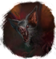

Jaskinia Południowa
Wymarła Osada
Podzamcze
Jaskinie

Acerodon Lv.28
Jaskinie pod Mokradłami
Jaskinie pod Wieżami
Zapomniany Korytarz
Jaszczurzy Cmentarz
1h - 1h10min
10-15min
Wilcza Jama
Wybrzeże
 Zębacz Lv.34
Zębacz Lv.34
 Tilsai Wędrowny
Tilsai Wędrowny
Las Koldów
 Zaklinacz Kruków Lv.50
Zaklinacz Kruków Lv.50
Las Orków
Wąwóz Dmother
 Tygrys Górski Lv.59
Tygrys Górski Lv.59